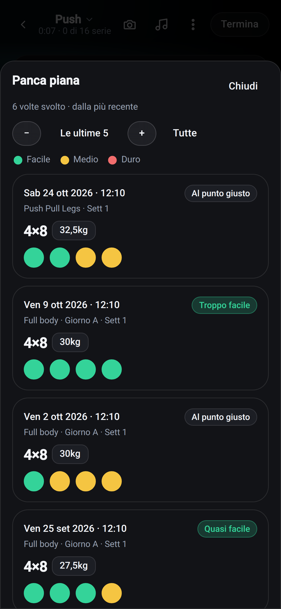
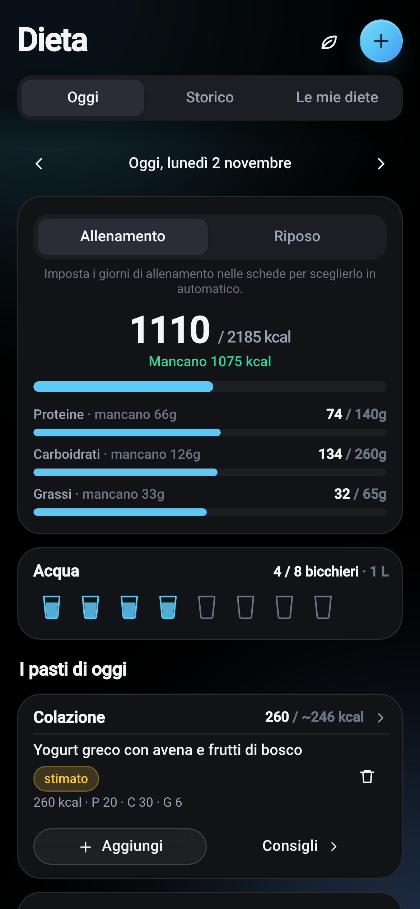
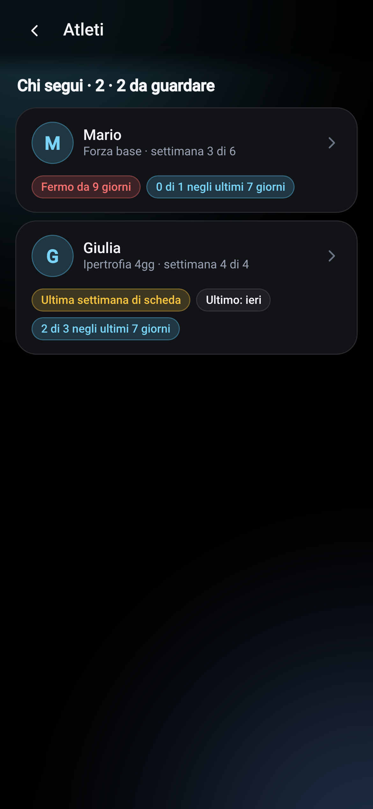

ProgettoPalestra
Ecco cosa
fa per te.
Scorri →
01Allenamento
02Progressi

03Dieta

04Il tuo PT

ProgettoPalestra
Scorri →



01 / 05
Allenamento
Riparti dal peso dell'ultima volta, con il timer di recupero e un tocco per dire com'è andata la serie.
05 / 05
ProgettoPalestra
Dal link in bio
progettopalestra.it
L'app non sostituisce un medico, un nutrizionista o un allenatore.